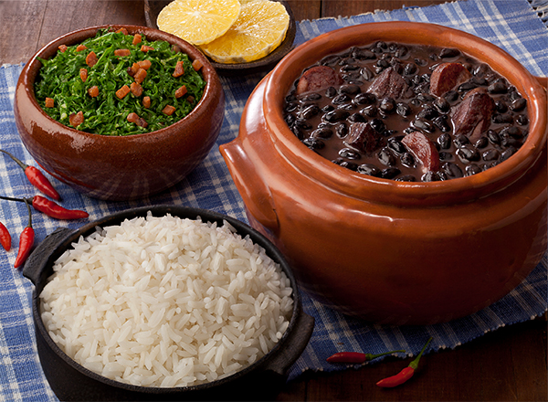

Receita de feijoada

Feijoada Completa
Confira a receita de feijoada da Camil, que possui um portfólio completo de grãos, como feijão, lentilha, soja, grão
de bico.
Ingredientes
- 400 Gramas de carne-seca (crua) cortada em cubos médios
- 200 Gramas de Lombo de Porco defumado cortado em cubos médios
- 200 Gramas de costelinha de porco defumada cortada em cubos médios
- 1 unidade de rabo de porco salgado pequeno
- Uma unidade de orelha de porco salgada pequena
- 1 quilograma de Feijão Preto Camil
- 6 litros de água
- 2 folhas de Louro Seco
- 1 unidade de Laranja sem casca
- 150 Gramas de bacon cortado em cubos médios
- 2 gomos de paio cortados em rodelas
- Dois gomos de linguiça calabresa defumada cortados em rodelas
- 2 unidades de cebola picados
- 6 unidades de dentes de alho picados
- sal a gosto
- Pimenta do Reino (Pó) a gosto
Modo de preparo
- • De véspera, lave as carnes para retirar o sal, transfira para uma tigela e cubra com água deixe de molho por
12 horas trocando a água no mínimo por 4 vezes.
- • Em uma panela grande, coloque o Feijão Preto CAMIL, a água e o louro. Tampe a panela e cozinhe em fogo médio.
- • Escorra as carnes que estavam de molho e em uma panela coloque o rabo e a orelha, cubra com água e cozinhe por
20 minutos. Escorra e reserve.
- • Repita o processo com a carne seca, o lombinho e a costelinha.
- • Junte todas as carnes no feijão e cozinhe por 3 horas ou até o feijão ficar cozido e as carnes macias. Se
necessário acrescente mais água quente durante o cozimento.
- • Quando o caldo começar a engrossar, acrescente a laranja e cozinhe por mais 20 minutos. Retire a laranja da
panela e descarte.
- • Em uma frigideira, frite o bacon e as linguiças até dourarem e junte ao feijão.
- • Na mesma panela, refogue a cebola e o alho. Em seguida, retire 3 conchas de grãos do feijão preto CAMIL cozido
e amasse com as costas da concha.
- • Junte o refogado na feijoada, tempere com sal e pimenta do reino a gosto e cozinhe até o caldo engrossar.
Sirva em seguida
- • acompanhada de arroz branco, farofa, couve, laranja, torresmo e bisteca.